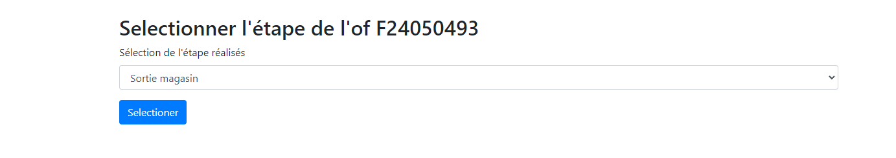
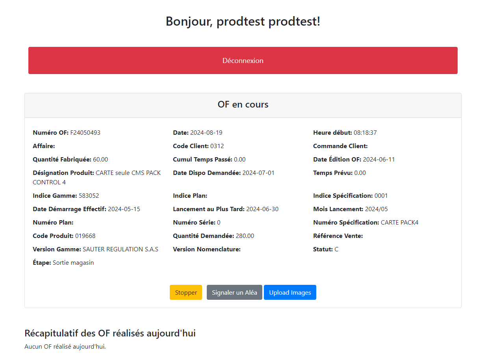
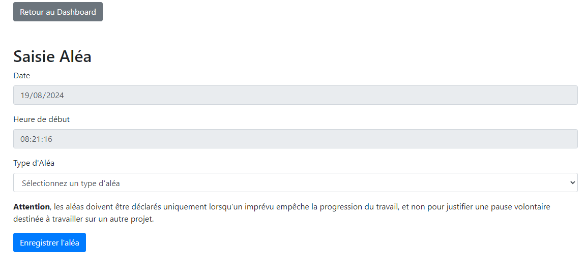
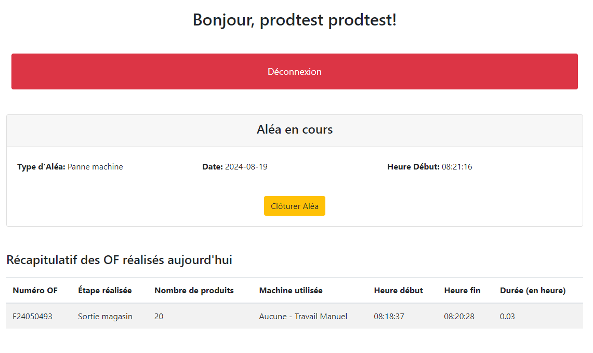
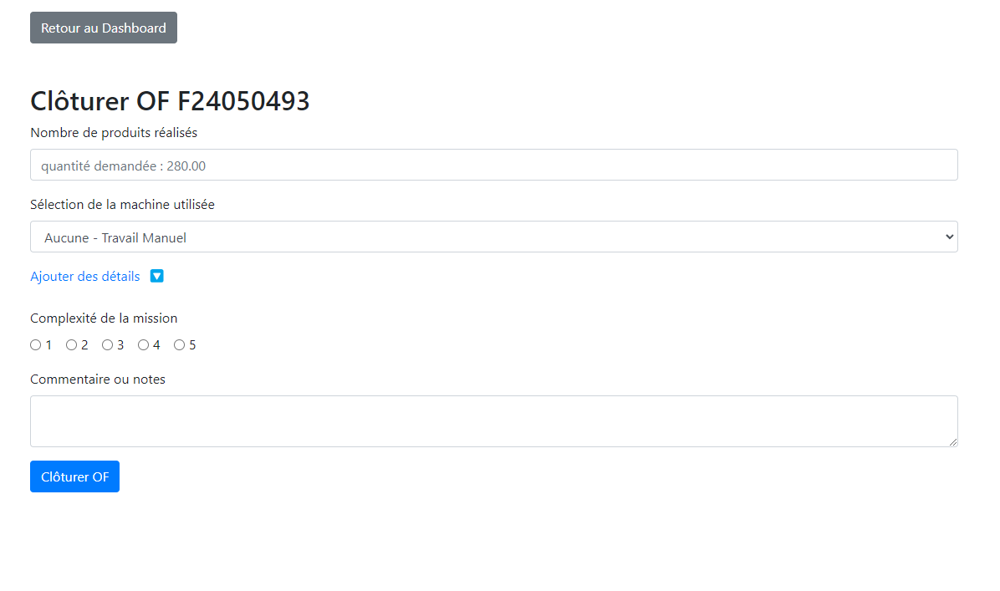
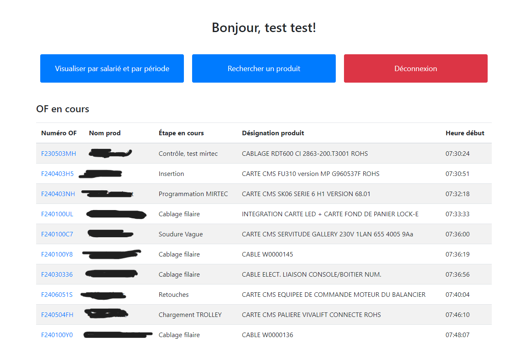
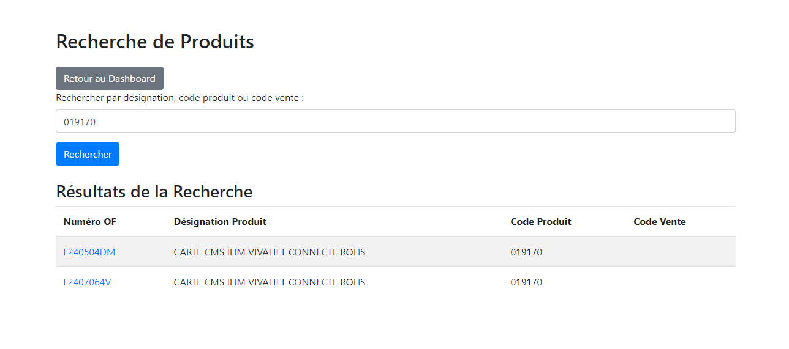

Réalisation de l'application web
Objectifs du projet
Le but était de permettre la saisie des heures de travail des employés ainsi que de faciliter la gestion et la génération de rapports sur les heures travaillées dans le cadre d'un ordre de fabrication (OF). Anciennement, tout était saisi manuscritement, ce qui engendrait une perte de temps dans la production. Une saisie numérique peut permettre un gain de temps et d'avoir une meilleure visualisation des saisies des employés.
Les prémices
Il a tout d'abord fallu se concerter mutuellement avec Redouane afin de se mettre d'accord sur la tournure de l'application.
Un autre cahier des charges a donc été réalisé (annexe 3).
Nous avons pris le temps de bien dialoguer pour débuter le projet dans de bonnes conditions.
Voici un croquis de la structure que l'application va adopter :
Développement et réalisation
Les langages utilisés l'application web sont HTML et PHP. HTML est utilisé afin d'afficher les pages web avec les informations, tandis que PHP est employé pour interagir avec la base de données et traiter les requêtes côté serveur. Chaque utilisateur de l'application (employés de production et administrateurs) doit pouvoir entrer un identifiant et un mot de passe. Cela permet plusieurs connexions simultanées, tout en connaissant le rôle de chacun grâce à l'identification.
Partie production
Définition : "Un Ordre de fabrication (OF) autorise le lancement de la production d’une quantité d’un produit pour un délai donnée.
L’OF autorise son ordonnancement et son exécution. Il peut être le lien entre une commande (ou demande d’approvisionnement) et la production de cette dernière." [Astrée]
Pour pouvoir numériser le suivi d'ordre de fabrication, il faut connaître les différents champs qui le constituent.
Nous avons comme champs, le code ou le nom du produit, le numéro de l'OF, l'étape de production, l'heure de début, l'heure de fin, le nombre de produits réalisés, la cadence de la production, la complexité de la tâche, les difficultés rencontrées et les observations / remarques.
Chaque OF possède un QR code qui permet de l'identifier.
L'application permettra de scanner ce QR code pour pouvoir commencer la saisie des champs.
J'ai réfléchi à une automatisation de certains de ces champs (numéro de l'OF, heure de début, heure de fin, durée et cadence), pour simplifier la tâche.
Quand l'application scanne le QR code, l'heure de début est enregistrée ainsi que le numéro de l'OF.
S'ouvre ensuite une nouvelle page où l'employé doit sélectionner l'étape sur laquelle il va travailler.

L'application reste "en pause" le temps de ce travail.

En cas de problème (exemple : panne de machine), l'employé clique sur un bouton "aléa" ce qui ouvre un formulaire spécifique.
Il y précise la nature de la complication.


Ce n'est qu'une fois le problème résolu qu'il met fin à l'aléa, ce qui permet la réapparition de la page "OF en cours".
Une fois la tâche terminée, l'utilisateur doit stopper l'OF sur l'application en cliquant sur le bouton stop.
Il est ensuite redirigé vers un formulaire pour saisir les différentes informations demandées :
- le nombre de produits réalisés
- la machine utilisée
- la complexité de la mission (facultatif)
- une descritpion ou un commentaire (facultatif)
 A la validation de celui-ci, l'heure de fin ainsi que la durée et la cadence sont automatiquement enregistrées. Si un souci a eu lieu, le temps de résolution est décompté de la durée totale.
Partie administration
Les administrateurs ont une page d'accueil différente de celle des employés de production.
Celle-ci permet de visualiser tous les OF en cours d'exécution.

Il est possible de cliquer sur le numéro d'un OF pour avoir son détail.
S'y trouvent aussi deux boutons, "Visualiser par salarié et par période" et "Rechercher produit".
Visualiser par salarié et par période
Cliquer sur ce bouton permet d'arriver sur une nouvelle page contenant un formulaire.
 En sélectionnant un employé de production et une période donnée, l'administrateur peut consulter les OF ainsi que les aléas concernant cet employé.
L'administrateur peut sélectionner l'option "Tout le monde" pour avoir une vue d'ensemble sur la production.
En cas d'erreur de saisie, il peut apporter des corrections.
En sélectionnant un employé de production et une période donnée, l'administrateur peut consulter les OF ainsi que les aléas concernant cet employé.
L'administrateur peut sélectionner l'option "Tout le monde" pour avoir une vue d'ensemble sur la production.
En cas d'erreur de saisie, il peut apporter des corrections.
Rechercher produit
En cliquant sur ce bouton, l'administrateur accède à une barre de recherche.
Il peut y renseigner le code d'un produit ou sa désignation afin de visualiser tous les OF passés et en cours concernant ce produit.

Résultats obtenus
L'application est en phase de test depuis le mois de Juillet. La période de fermeture estivale en a réduit la possibilité d'utilisation, cela ne permet donc pas d'avoir un recul suffisant. Toutefois, des avis positifs m'ont déjà été rapportés.